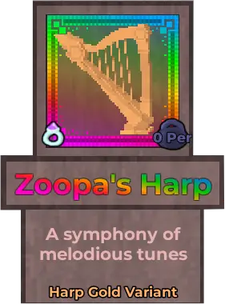
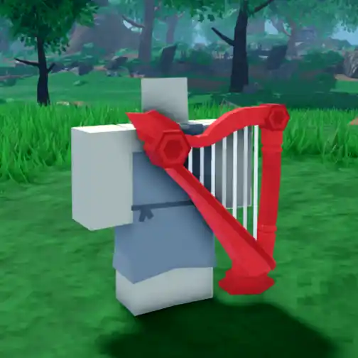
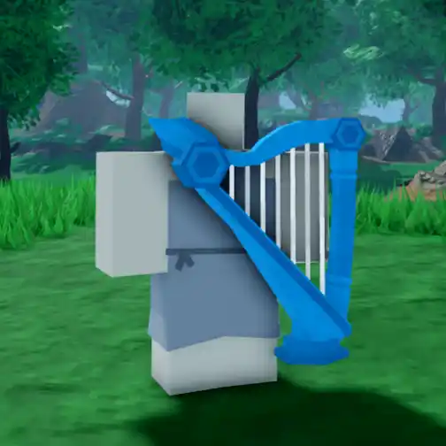
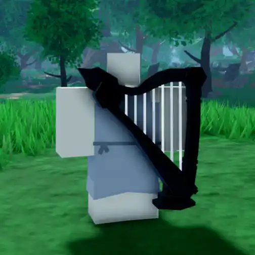

Zoopa's Harp

Info
Slot: Accessory
Recolorable?: Yes
Unique Colors: Harp Gold
Particle Effects: None
Sound Effects: Yes
Owner: Spielmitmir22 / Zoopa
Appearance & Effects
In-game description: A symphony of melodious tunes
Zoopa's Harp is an accessory that appears to be an elaborate, golden harp with white strings. It floats behind the player and follows them around. It is somewhat large, being bigger than the player's torso. The harp can be recolored, and the body will change colors while the strings stay white. It has one unique color called Harp Gold.
Zoopa's Harp will occassionally play musical chords from a random list. It has seven unique sound effects, all various harp chords that are occasionally played at random while the harp is equipped. The sound files for the harp can be found embedded in the gallery below. Zoopa's Harp is one of the few relics that has it's own sound effects, the others being Bojji and Tusk.
Inspiration
Zoopa's Harp was inspired by the harp instrument, specifically the Golden Harp from Sorcery: Contested Realm. The short chords that it plays were inspired by the similar melodies for the Harpstring Bow.

A player with the harp equipped

The harp following a player
Image Gallery

The inspiration for Zoopa's Harp, from the TCG Sorcery: Contested Realm

Zoopa's Harp from a different angle

Zoopa's Harp following behind a player

Colored red

Colored blue

Colored black
Harp Chord 1
Harp Chord 2
Harp Chord 3
Harp Chord 4
Harp Chord 5
Harp Chord 6
Harp Chord 7